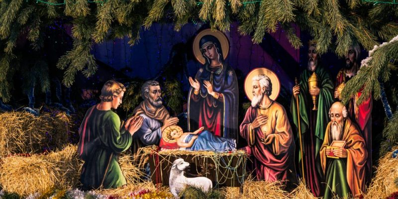
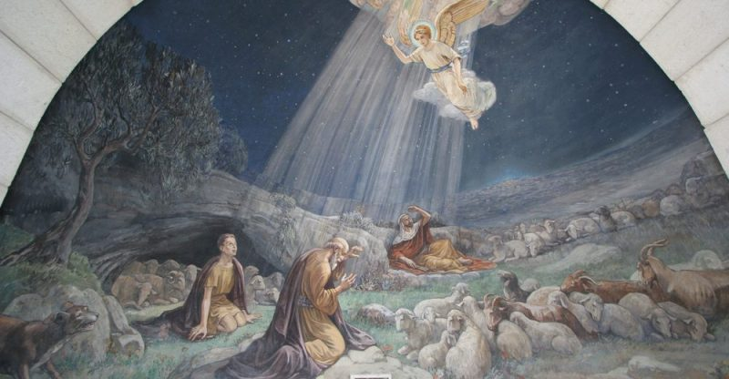

Navidad
Te explicamos qué es la navidad y el origen de esta celebración. Además, algunas de sus tradiciones y cómo se celebra en diversos países.

¿Qué es la Navidad?
La Navidad es una festividad cristiana en la que se conmemora el nacimiento de Jesucristo. Se celebra el 25 de diciembre, excepto en la Iglesia ortodoxa rusa y otras iglesias orientales que se rigen por el calendario juliano, en las que se festeja el 7 de enero (correspondiente al 25 de diciembre en el calendario gregoriano).
La palabra Navidad proviene del latín nativitas, ‘nacimiento”. El mismo origen tienen el francés Nöel, el italiano Natale y el portugués Natal. En inglés, la festividad recibe el nombre de Christmas (Mass of Christ ’s day, ‘día de la misa de Cristo’). En alemán se denomina Weihnachten, ‘noche sagrada’.
A pesar de ser una fiesta cristiana, la Navidad es celebrada actualmente en gran parte del mundo también por no cristianos, desprovista de su contenido religioso, como una ocasión de reencuentro y reconciliación entre familiares y amigos cercanos.
Origen de la Navidad

Según los Evangelios de Mateo y Lucas, Jesús, considerado el Mesías anunciado por los profetas en el Antiguo Testamento, nació en la aldea de Belén, durante el reinado de Herodes el Grande, rey vasallo de Roma (Mt 2,1; Lc 1, 5 y 2, 6-7).
Lucas señala que los padres de Jesús, María y José, se trasladaron a Belén desde Nazaret para empadronarse, en cumplimiento de un decreto del emperador Augusto (Lc 2, 1-6). Este evangelista también menciona que Jesús nació en un pesebre “porque no había sitio en la posada” (Lc 2, 7) y que un ángel anunció su nacimiento a unos pastores, quienes fueron los primeros en ir hasta el pesebre a adorarlo (Lc 2, 8-20).
Los Evangelios no precisan la fecha en la que nació Jesús ni dan indicios al respecto. La primera mención del 25 de diciembre como día del nacimiento de Jesús se encuentra en un texto del helenista y apologista Sexto Julio Africano, del año 221.
Entre los motivos por los que se pudo haber establecido esa fecha, se suele invocar la necesidad de la Iglesia de reemplazar la fiesta pagana del dies solis invicti nati (‘día del nacimiento del dios invicto’), en la que se celebraba el solsticio de invierno como día del nacimiento del Sol, con el fin de facilitar la aceptación del cristianismo.
Celebración litúrgica de la Navidad
La celebración de la Navidad quedó firmemente establecida a partir del siglo IV. Sin embargo, recién en el siglo IX la Iglesia católica adoptó una liturgia específica para esa festividad. Esta incluye tradicionalmente la celebración de cuatro misas: la Misa de vigilia (Misa de Gallo) la Misa de medianoche, la Misa del alba o de la aurora y la Misa del día.
En el calendario litúrgico, la Navidad está precedida por las cuatro semanas del tiempo de Adviento, el período de penitencia y de preparación de la Navidad. La celebración de la Navidad marca el inicio del tiempo de Navidad, que se extiende desde el 25 de diciembre hasta la fiesta del Bautismo del Señor (entre el 9 y el 13 de enero, según los años). Fuera de la Iglesia católica, el tiempo de Navidad dura 12 días, del 25 de diciembre al 5 de enero.
Tradiciones de la Navidad
La Navidad está asociada a varias tradiciones. Algunas de ellas son actualmente de alcance casi universal.
- El árbol de Navidad. Los orígenes del árbol de Navidad se remontan a los antiguos pueblos escandinavos y germanos. Estos, como parte de la celebración del nacimiento del dios Frey, adornaban un árbol de hoja perenne. Se atribuye a San Bonifacio (672-754) evangelizador de Alemania, haber adaptado esta costumbre al cristianismo. El árbol, un pino o abeto, se convirtió así en un símbolo del nacimiento de Jesús. Desde el norte de Europa, esta tradición se difundió al resto del mundo. En los hogares católicos, el árbol se prepara el 8 de diciembre, día en que se celebra la fiesta de la Inmaculada Concepción de la Virgen.
- El pesebre. Los pesebres, también llamados belenes o nacimientos, fueron popularizados por San Francisco de Asís. En la víspera de la Navidad de 1223, este santo montó un pesebre con personas y animales reales en una cueva en las afueras de la aldea de Greccio, en Italia. En los hogares católicos, el pesebre se arma el 8 de diciembre, junto con el árbol de Navidad.
- Papá Noel. La figura de este personaje, también conocido como Santa Claus, San Nicolás y, en Chile, como Viejito Pascuero, proviene de la leyenda en torno a San Nicolás de Bari, un obispo del siglo IV que vivió en Turquía y de quien se cuenta que arrojó por una chimenea dinero a un padre que no podía casar a sus tres hijas solteras, por carecer de dote. Se atribuye a los holandeses, quienes fundaron Nueva Ámsterdam (la actual Nueva York), haber llevado la figura de Santa Claus a América, junto con la costumbre de entregar regalos.
- Corona de Adviento. La corona de Adviento, formada por un corona de ramas de pino o abeto y cuatro velas, representa la espera y la preparación de la Navidad, durante las cuatro semanas que le preceden. Cada vela simboliza un domingo de Adviento. Como otras tradiciones cristianas, esta tiene su origen en tradiciones paganas; en este caso, de los pueblos germanos, que confeccionaban coronas de ramas verdes y prendían velas para representar el fuego del dios Sol y la esperanza de la venida de la primavera.
- Los villancicos. Estas canciones populares navideñas fueron en sus inicios, en el siglo XIII, composiciones de temas profanos. A partir del siglo XVI, la Iglesia empezó a promover los villancicos de temática religiosa, para que fueran cantados durante las procesiones y otras celebraciones religiosas. De entre estas festividades, la Navidad, por la alegría a la que está asociada, fue en la que tuvo mayor difusión. El equivalente del villancico en Inglaterra es el carol.
- La cena de Nochebuena. Durante la víspera de Navidad es habitual en muchos sitios que las familias se reúnan para compartir una cena abundante. Los platos varían de un país a otro, de acuerdo con la gastronomía propia de cada lugar. Al llegar las doce de la noche, se realiza un brindis. En muchos países, se hace el intercambio los regalos, colocados junto al árbol. En otros países, los regalos se abren el día 25 por la mañana.
La Navidad en algunos países
Además de las costumbres que se viven en todo el mundo, cada país tiene sus propias tradiciones navideñas.
- En México, entre el 16 y el 24 de diciembre tienen lugar las recorridas conocidas como posadas. Durante 9 días, niños y adultos, rememorando la búsqueda de María y José en Belén, salen a las calles y visitan nueve casas, hasta encontrar la casa donde se les dé posada. Las salidas van acompañadas de cantos y rezos. El anfitrión recibe a los peregrinos con ponche, frutas y el aguinaldo o colación, una pequeña bolsa con dulces y cacahuates. Al final, se rompe una piñata de siete picos, que simbolizan los 7 pecados capitales.
- En Polonia, la celebración navideña comienza en la víspera con la aparición de la primera estrella en el cielo. En la mesa donde se celebra la cena, se pone debajo del mantel un poco de paja, como recordatorio de que Jesús nació en un pesebre. En muchos hogares, se sirven doce platos, uno por cada apóstol, y se deja en la mesa de manera simbólica un lugar adicional para el niño Jesús o un visitante inesperado. Antes de iniciar la cena, los comensales comparten el oplatek, una hostia sin consagrar y la comen, como símbolo de reconciliación.
- En Finlandia, la víspera de Navidad se realiza la ceremonia de la Declaración de la Paz de Navidad. En la ciudad de Turku (antigua capital de Finlandia) se lee un texto en el que se declara la “paz general de Navidad” y se desea a todos una Navidad pacífica y feliz. La preparación de la Navidad incluye una limpieza a fondo del hogar y una sesión de sauna. Luego, los finlandeses se visten con ropa limpia para la cena. Tras la cena, Papá Noel, llamado Joulupukki, visita las casas, a veces acompañado de un elfo.
- En Ucrania, la Navidad se celebra en dos fechas: el 25 de diciembre, para los católicos y protestantes, y el 7 de enero, para los ortodoxos. Entre los adornos con los que se decoran los árboles navideños se encuentran algunos con forma de telarañas, en los que se coloca una araña artificial, siguiendo una leyenda acerca de una mujer pobre que decoró su árbol de esa manera, y luego vio cómo las telarañas se convirtieron en hilos de plata. La cena de Nochebuena se conoce como santa cena. En ella, se sirven 12 platos, uno por cada apóstol. Durante la comida, se habla en voz baja. Además, al igual que en otras ocasiones especiales, junto a la mesa o en otro lugar visible se colocan los retratos de los parientes fallecidos y, al lado de ellos, un poco de pan y sal, una copa de aguardiente y una vela encendida.